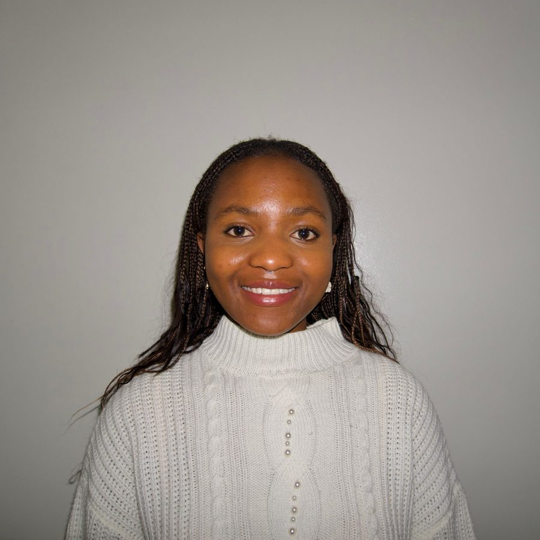

About

Kimberley Tanatswa Muchenje is a PhD candidate in the Division of Biology and Biological Engineering at Caltech, where she is mentored by Dr. Gözde Demirer. She is building novel genome engineering technologies based on transposons, the genetic elements commonly referred to as jumping genes due to their uncontrolled movements within genomes. She is developing these transposons into tools that efficiently insert new DNA at targeted loci in plants and optimizing them for compatibility with emerging delivery vehicles such as nanoparticles and viral vectors.
The goal
To lower the barrier to engineering plants, enabling us to develop climate-resilient crops, use non-crop plants as sustainable chassis for bioproduction, and perturb plant genomes to learn fundamental biological principles.
Bio
Kimberley grew up in Zimbabwe, and credits her journey to USAP Zimbabwe, a mentorship program that guided her through applications to Davidson College. At Davidson she majored in biology and researched gene regulation in C. elegans under the mentorship of Dr. Debbie Thurtle-Schmidt.
While there, Kimberley developed Jekesa Remangwana, an initiative geared towards teaching biotechnology to high school and college students in Zimbabwe and mentoring them into biotechnology careers. One participant of the Jekesa Remangwana program, Shalom, went on to gain acceptance at Davidson College for her undergraduate degree. She continues to mentor participants through their careers, with the goal of empowering the next generation of Zimbabwean scientists to develop biotechnological solutions to the country's pressing challenges in food security and access to medicines.
At Caltech, Kimberley has continued to mentor undergraduate and rotating PhD students, as well as high school students from San Marino High School, on her research. She believes in paying forward the mentorship that shaped her own journey into science.